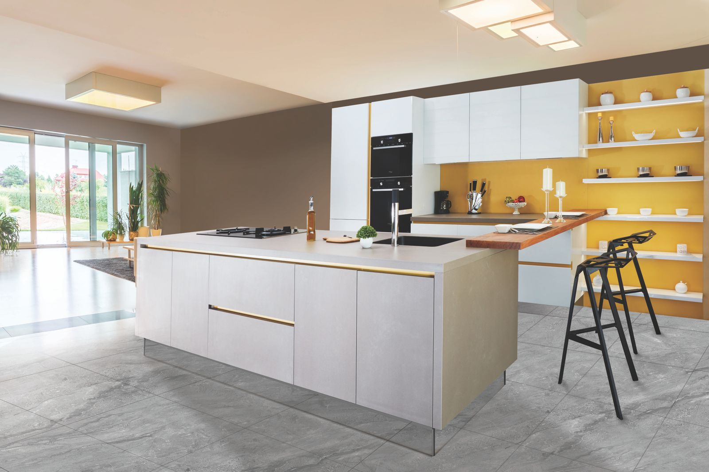

CSR
Built lighter, given back.
Sustainability is a design rule first — and a community duty always.
Environment
Lighter buildings, kinder city.
Every Tat:vm project is planned to tread lighter — on the grid, the water table and the neighbourhood.
Rainwater harvestingDesigned in, not bolted on
Solar-ready roofsProvision for common-area solar
Native shadingTrees that cut cooling loads
Low-waste materialsChosen for long life & repair
Community
Rooted in the neighbourhood.
Local-first hiring
Construction and operations staff drawn from the neighbourhoods we build in.
Street-respecting design
Shops, shade and sit-outs that give back to the street, not walls that turn away.
Site-worker welfare
Safety, insurance and dignity as non-negotiables on every site we run.
Accountability
We publish what we practice.
As projects complete, this page will carry our actual numbers — water saved, waste diverted, hours of site training. Green claims should be checkable.